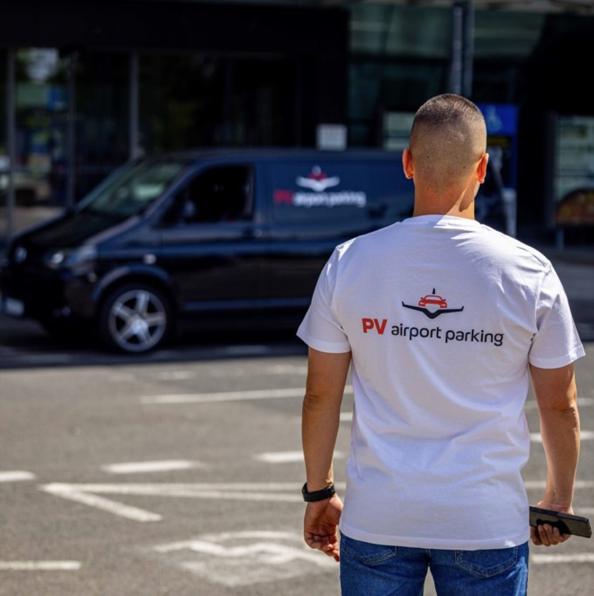
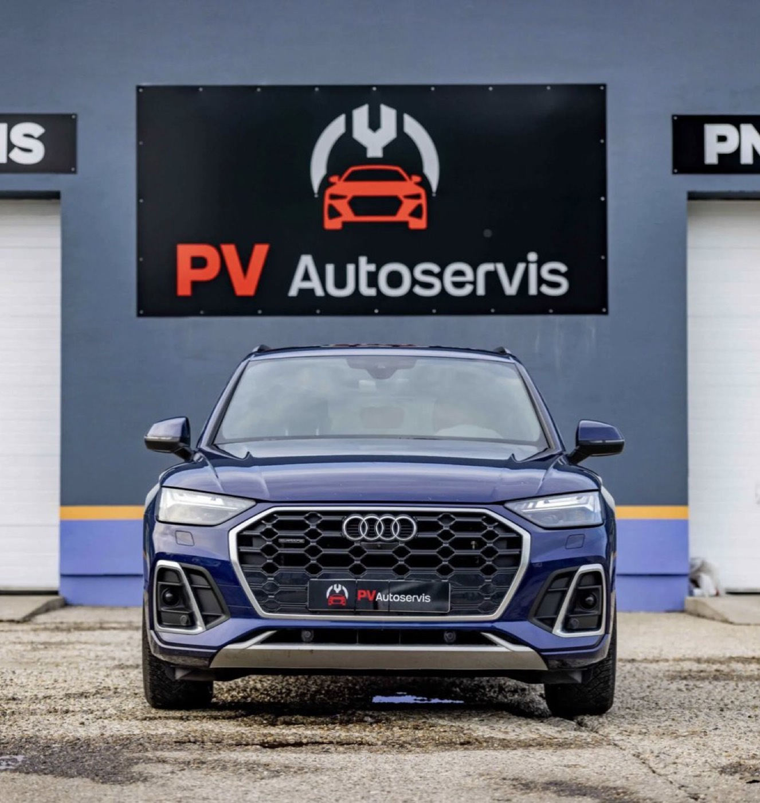

Nové weby PV airport parking a PV Autoservis
Prejdite si oba weby ako zákazník – na počítači aj na mobile. Všetko funguje: rezervácia, zrušenie, prihlásenie aj anglická verzia parkovania.

Parkovanie pri letisku Bratislava s transferom na terminál.
Otvoriť web pvparking.sk
Autoservis v Ružinove – vo farbách a písme z dizajn manuálu.
Otvoriť web pvautoservis.skNič sa naozaj neodosiela: rezervácie a prihlásenie sa ukladajú len vo vašom prehliadači a e-maily sa zobrazia ako náhľad priamo na stránke. Objednanie termínu v autoservise vedie do systému Apponio ako dnes. Hotové weby budú používať skutočný rezervačný systém.